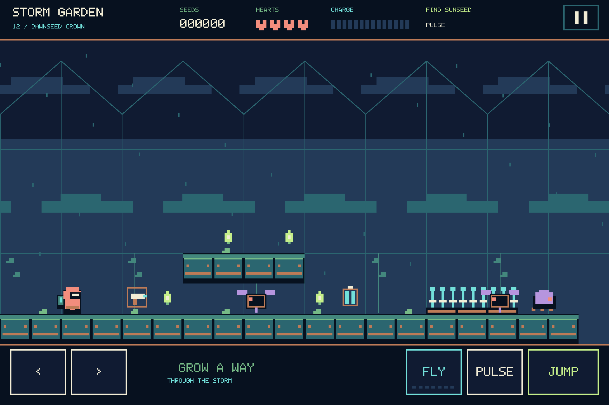
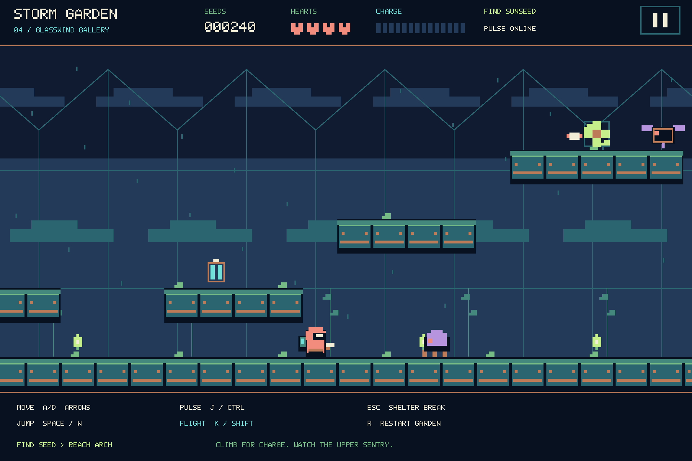
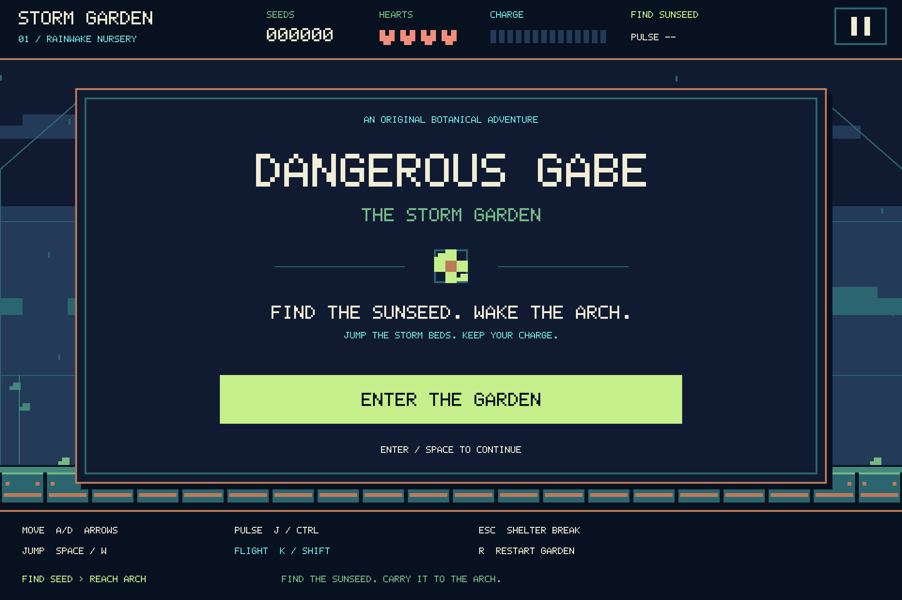
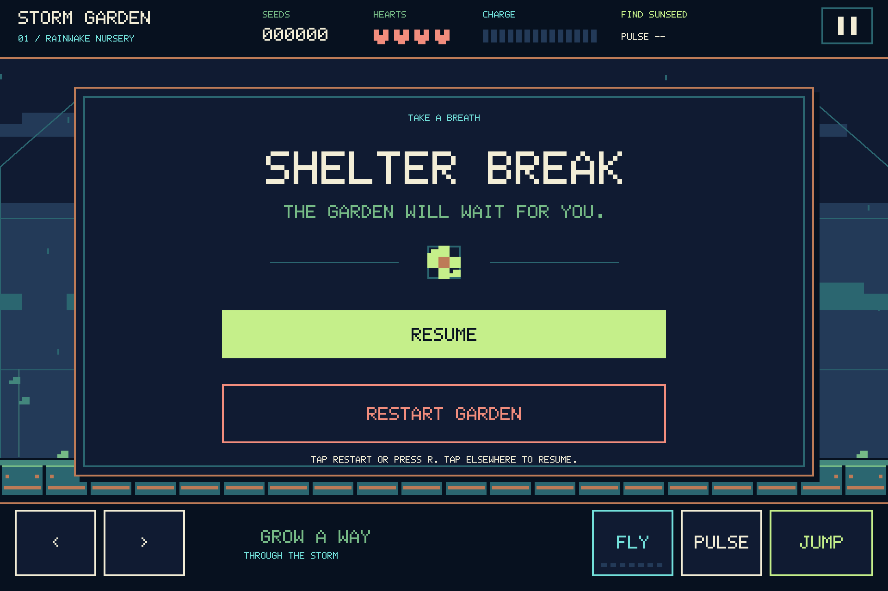

Carry the sunseed
The large living seed wakes the arch. Small seed motes reward a detour.
ORIGINAL PLATFORM ADVENTURE · RUST + SDL3
The storm has
a gardener.
One coral coat. A little stored lightning.
Twelve gardens that need to see the dawn.

Above the clouds, Gabe tends a chain of floating greenhouses. Then a storm gets into the machinery.
The arches go dark. The tenders turn hostile. A fault travels inward from the outer stormworks, and the youngest plants are running out of night.
Gabe takes his pulse sprayer, straps on a capacitor pack and begins his rounds. Find each garden's sunseed. Carry it to the exit arch. Follow the damage all the way to its source.
From the nursery to the crownThe large living seed wakes the arch. Small seed motes reward a detour.
Cells set your flight reserve. Land, refill and choose the next crossing.
Find the pulse sprayer. Crawler patrols and firing sentries guard the way.
THE WORK DOESN'T END AT THE SIXTH ARCH
Start with your boots on solid ground. End among roof seeds, guarded refills and gaps that demand every last spark. Open a garden to read its story and route.
When the last arch wakes,
the sky is alive.
Twelve small lights find each other through the thinning rain. Gabe finishes his rounds.
Original geometric worlds, an original Trellis alphabet and a gardener in a coral coat. These are actual native game frames. Select an image for a closer look.



A standalone Rust and SDL3 game. No browser play is embedded here. Build a source checkout, or use release artifacts when the project's release workflow has published them.
FROM A SOURCE CHECKOUT
Install Rust and the native build tools for your platform. The default build compiles SDL3 from source.
cargo run --locked --release{{REPO_NOTE}}
{{REPO_LABEL}}Use CMake, a C/C++ compiler and Rust. Windows uses the MSVC toolchain; macOS uses Xcode Command Line Tools. Linux additionally needs its display and audio development libraries. The repository guide lists the exact packages and commands.
Apple mobile builds use Xcode, an installed iOS SDK and the project's iOS build script. Physical-device installation requires appropriate signing and provisioning. An unsigned device ZIP is a build artifact, not an installable app. A simulator ZIP runs only in a compatible simulator.
The release workflow packages desktop archives, a universal iPhone/iPad unsigned build and an arm64 simulator build. A signed IPA is optional when valid Apple signing configuration is supplied. GitHub artifacts are not App Store or TestFlight publication.
Platform evidence describes local development validation. This page does not promise a published release or store listing.
Hold pulse after finding the sprayer; hold flight while charge remains. Both Control and Shift keys work. Jump is a press while grounded.
Enter or Space begins from the title, resumes a pause, advances after a cleared stage, or starts a new campaign after victory or defeat. P / Esc pauses or resumes play; it does not quit. R retries the current garden while playing or paused. Q or closing the window quits.
Four lives carry through the campaign. Damage spends a life and restarts the garden; manual retry costs no life. A restart rolls back the stage's score, pickups and tools. Each new stage starts with fresh tools and charge. Touch controls offer movement, flight, pulse, jump, pause and retry.
A SMALL LIGHT IS STILL A LIGHT.
Tend the sky.
Back to the greenhouse